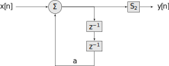
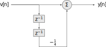

Lecture 4
CT and DT Fourier Analysis
2025-08-11
In today’s lecture we review the concepts of real frequency domain analysis, aka Fourier analysis from ECE 2714.
CT Fourier Analysis
Recall that periodic CT signals with period \(T\) that meet the Direchlet conditions
The signal has a finite number of discontinuities per period.
The signal has a finite number of maxima and minima per period.
The signal is bounded, i.e. \[\int_{T} |x(t)| \;dt < \infty\]
can be decomposed using the CT Fourier series
\[x(t) \approx \sum\limits_{k = -\infty}^{\infty} a_k \, e^{j k\omega_0 t}\]
where \(a_k \in\mathbb{C}\) and \(\omega_0 = \frac{2\pi}{T}\). The Fourier series coefficients are given by
\[a_k = \frac{1}{T_0} \int\limits_{0}^{T_0} x(t)e^{-jk\omega_0 t}\]
and measure the similarity of \(x(t)\) to the signal \(e^{-jk\omega_0 t}\).
A plot of \(|a_k|\) and \(\angle a_k\) as a function of \(k\) is called magnitude and phase spectrum.
Example. Recall that sampling of a CT signal can be thought of as multiplication by the impulse train
\[x(t) = \sum\limits_{m = -\infty}^{\infty} \delta(t-mT)\]
The Forier series coefficients are
\[a_k = \frac{1}{T} \int\limits_{T} x(t)e^{-jk\omega_0 t} \; dt = \frac{1}{T} \int\limits_{-\frac{T}{2}}^{\frac{T}{2}} \delta(t)e^{-jk\omega_0 t} \; dt = \frac{1}{T}\]
For non-periodic CT signals the decomposition is over an uncountably infinite set of frequencies
\[x(t) = \mathcal{F}^{-1}\{X(\omega)\} = \frac{1}{2\pi} \int\limits_{-\infty}^{\infty} X(\omega)e^{j\omega t}\; d\omega\] where the Fourier transform is
\[X(\omega) = \mathcal{F}\{x(t)\} = \int\limits_{-\infty}^{\infty} x(t) e^{-j\omega t}\; dt\]
A plot of \(|X(j\omega)|\) and \(\angle X(j\omega)\) are called the magnitude and phase spectra respectively.
The most usefull property of the CTFT is the convolution property. Let
\[\mathcal{F}\left\{ h(t) \right\} = H(j\omega)\] be the Fourier transform of the impulse response of a stable system, and \[\mathcal{F}\left\{ x(t) \right\} = X(j\omega)\] be the Fourier transform of the input signal. Then the output in the Fourier domain \(Y(j\omega)\) is
\[Y(j\omega) = H(j\omega)X(j\omega)\]
The output in the time domain is then the inverse Fourier transform of \(Y\)
\[y(t) = \mathcal{F}^{-1}\left\{ Y(j\omega) \right\}\]
Note for this to work the Fourier transforms of \(h(t)\) and \(x(t)\) must exist.
\(H)j\omega)\) is called the Frequency response of the system and exists if the system is BIBO stable.
This gives us an alternate route to analysis of stable systems.
Example. Consider a LTI CT system given by the LCCDE \[\frac{d^2y}{dt^2} + 12\frac{dy}{dt} + 20y(t) = 5x(t)\] Find the output \(y(t)\) if the input is \(x(t) = e^{-t}u(t)\) using Fourier analysis, if possible.
Solution.
Determine the system stability using the roots of the characteristic equation. \[Q(D) = D^2 +12D + 20 = (D+10)(D+2)\] has roots -10 and -2, which are in left-hand side of the complex plane, thus the system is BIBO stable
Using the derivative, linearity, and convolution properties of the Fourier transform, find the transform of the impulse response \[\begin{aligned} (j\omega)^2 Y(j\omega) + 12(j\omega)Y(j\omega) + 20Y(j\omega) &= 5X(j\omega)\\ \frac{Y(j\omega)}{X(j\omega)} &= \frac{5}{(j\omega)^2 + 12(j\omega) + 20}\\ H(j\omega) &= \frac{5}{20-\omega^2 + j 12\omega} \end{aligned}\]
Using the Fourier transform or a table of transforms and properties find the Fourier transform of the input \[X(j\omega) = \frac{1}{1+ j\omega}\]
Using the convolution property of the Fourer transform of the output \[Y(j\omega) = \frac{5}{\left[j\omega)^2 + 12(j\omega) + 20\right](j\omega + 1)}\]
Using the inverse Fourier transform or a table of transforms and properties, find the inverse transform. First, doing a partial fraction expension \[Y(j\omega) = \frac{A}{j\omega + 10} + \frac{B}{j\omega + 2} + \frac{C}{j\omega + 1}\] Some algebra gives \(A = \frac{5}{72}\), \(B = -\frac{5}{8}\), \(C = \frac{5}{9}\). Then using a table and properties \[y(t) = \frac{5}{72}e^{-10t}u(t) -\frac{5}{8}e^{-2t}u(t) + \frac{5}{9}e^{-t}u(t)\]
DT Fourier Analysis
DT periodic functions can be decomposed as
\[x[n] = \sum\limits_{k = N_0}^{N_0 + N-1} a_k e^{jk\omega_0n}\] where \(N\) is the period, \(\omega_0 = \frac{2\pi}{N}\), and \(N_0\) is any starting index for the sum.
The FT Fourier series coefficients \(a_k\) are given by
\[a_k = \frac{1}{N} \sum\limits_{n = N_0}^{N_0+N-1} x[n]e^{-j\frac{2\pi}{N} k n }\]
As before the plot of \(|a_k|\) and \(\angle a_k\) is called the magnitude and phase spectrum.
Recall that the DTFS is proportional to the DFT/FFT \(X[k]\) of a finite-length sequence equivalent to the values of the periodic signall over just one period.
\[X[k] = \sum\limits_{n = 0}^{N-1} x[n]e^{-j\frac{2\pi}{N} k n }\]
Example. Compute the DFT by hand of the finite-length signal \({1,2,1}\) using the DTFS. Confirm your results using Matlab.
Solution.
Periodically extend the signal with period \(N = 3\). \[\{ \ldots, 1, 2, 1, 1, 2, 1, 1, 2, 1, \ldots \}\]
Determine the Fourier series coefficients. Let \(N_0= 0\), then from the definition \[\begin{aligned} a_k &= \frac{1}{N} \sum\limits_{n = N_0}^{N_0+N-1} x[n]e^{-j\frac{2\pi}{N} k n }\\ &= \frac{1}{3} \sum\limits_{n = 0}^{2} x[n]e^{-j\frac{2\pi}{3} k n }\\ &= \frac{1}{3}\left[ x[0]e^{-j\frac{2\pi}{3} k (0)} + x[1]e^{-j\frac{2\pi}{3} k (1)} + x[2]e^{-j\frac{2\pi}{3} k (2)}\right]\\ &= \frac{1}{3}\left[ 1 + 2e^{-j\frac{2\pi}{3} k} + e^{-j\frac{4\pi}{3} k}\right] \end{aligned}\]
Finally \[X[k] = N a_k = 1 + 2e^{-j\frac{2\pi}{3} k} + e^{-j\frac{4\pi}{3} k}\] for \(k = 0,1,2\). Evaluating numerically gives \(X[0] = 4\), \(X[1] \approx -0.5 - j0.866\), \(X[2] \approx -0.5 + j0.866\).
Comparing this to the numerical computation of the DFT in Matlab
octave:1> X = fft([1,2,1]) X = 4.0000 + 0i -0.5000 - 0.8660i -0.5000 + 0.8660i
For non-periodic signals the decompostion is
\[x[n] = \frac{1}{2\pi} \int_{2\pi} X\left(e^{j\omega}\right) e^{j\omega n} \; d\omega\] where the integral is over any \(2\pi\) period of \(X\). The DT Fourier transform is given by
\[X\left(e^{j\omega}\right) = \sum\limits_{n = -\infty}^{\infty} x[n] e^{-j\omega n}\] Note \(X\left(e^{j\omega}\right)\) must be a periodic function with period \(2\pi\).
Again a plot of \(|X\left(e^{j\omega}\right)|\) and \(\angle X\left(e^{j\omega}\right)\) is the spectrum of the signal. It is often only plotted from \([-\pi, \pi]\) or \([0, 2\pi]\) since it is periodic outside that range and thus redundant information.
As in CT the most usefull property is related to convolution. Let \[\mathcal{F}\left\{ h[n]\right\} = H\left(e^{j\omega}\right)\] be the DT Fourier transform of the system impulse response. Let
\[\mathcal{F}\left\{ x[n]\right\} = X\left(e^{j\omega}\right)\] be the DT Fourier transform of the input. Then the output in the Fourier domain is given by
\[Y\left(e^{j\omega}\right) = H\left(e^{j\omega}\right) X\left(e^{j\omega}\right)\]
and in the time domain
\[y[n] = \mathcal{F}^{-1}\left\{ Y\left(e^{j\omega}\right) \right\}\]
as long as all the transforms exist.
The function \(H\left(e^{j\omega}\right)\) is called the frequency response of the DT system and exists if the system is BIBO stable.
This gives an alternate analysis route for DT systems, parallel to the CT case
Example. Consider the following system where \(a = \frac{1}{4}\) and system \(\mathcal{S}_2\) is unknown.

Draw a block diagram for \(S_2\) such that \(y[n] = x[n]\), that is, it is the inverse of the system it is in series with. Use Fourier analysis to derive your result.
Solution.
Let \(v[n]\) be the output of the first system. Then \[v[n] = \frac{1}{4} v[n-2] + x[n]\] or in standard advance form \[v[n+2] - \frac{1}{4} v[n] = x[n+2]\]
To see if the first system is stable check the roots of \(Q(E)\) \[Q(E) = E^2 - \frac{1}{4} = \left(E + \frac{1}{2}\right)\left(E - \frac{1}{2}\right)\] Since both roots have magnitude less than unity (\(|\pm \frac{1}{2}| < 1\)), the system is stable.
Using the index shift and linearity properties of the DTFT \[e^{j2\omega}\, V\left( e^{j\omega} \right) - \frac{1}{4} V\left( e^{j\omega} \right) = e^{j2\omega}\, X\left( e^{j\omega} \right)\] Rearranging we get the frequency response for the first system \[\frac{V\left( e^{j\omega} \right)}{X\left( e^{j\omega} \right)} = \frac{e^{j2\omega}}{e^{j2\omega}-\frac{1}{4}}\]
We look for a frequency response for system 2, \(H_2\left( e^{j\omega} \right)\) such that \[\begin{aligned} Y\left( e^{j\omega} \right) &= H_2\left( e^{j\omega} \right)V\left( e^{j\omega} \right) = X\left( e^{j\omega} \right)\\ &= H_2\left( e^{j\omega} \right)\frac{e^{j2\omega}}{e^{j2\omega}-\frac{1}{4}}X\left( e^{j\omega} \right) = X\left( e^{j\omega} \right) \end{aligned}\] Thus we need \[H_2\left( e^{j\omega} \right) = \frac{e^{j2\omega}-\frac{1}{4}}{e^{j2\omega}}\]
The corresponding LCCDE is \[y[n+2] = v[n+2] - \frac{1}{4} v[n]\] or in recursive form \[y[n] = v[n] - \frac{1}{4}v[n-2]\] This corresponds to the block diagram:
